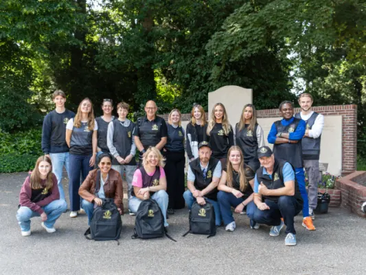

Gids
Zaal huren in Nijmegen
Een verjaardag, bruiloft, vergadering of teamuitje: met de juiste zaal staat de basis. In en rond Nijmegen vind je zalen voor tien tot honderden gasten, in de stad en in het groen.
Hier vind je onze locatietips en waar je op let bij het kiezen.
Locaties
Onze favoriete zalen in en rond Nijmegen, met een checklist voor capaciteit, voorzieningen, kosten, catering en bereikbaarheid.

7x een zaal huren in Nijmegen
In de bruisende stad Nijmegen is van alles te doen. Voor zowel inwoners, studenten als toeristen is het niet nodig om voor festiviteiten of…

Welke trouwlocatie kies je voor jouw droombruiloft?
Een droombruiloft begint met het vinden van de perfecte locatie, en in de omgeving van Nijmegen zijn er talloze prachtige plekken waar je kunt trouwen…
Zakelijk
Voor een vergadering, training of teamuitje.

Teamuitje Nijmegen: spanning, natuur en culinair genieten
Een teamuitje is dé manier om llega’s dichter bij elkaar te brengen, plezier te maken en nieuwe energie op te doen. Nijmegen leent zich daar uitstekend…

Tenten voor cultuur en buurtactiviteiten in Nijmegen
Nijmegen bruist het hele jaar door van cultuur. Van openluchtconcerten aan de Waalkade en kleinschalige kunstmarkten in het centrum tot de grote…
Andere gidsen: bijzondere momenten
Locaties in Nijmegen
Heb je zelf een locatie? Kom hier als partner te staan.
Veelgestelde vragen
Hoe ver van tevoren reserveer je een zaal?
Voor een feest op zaterdag of in december reserveer je het best een paar maanden vooruit. Doordeweeks en voor kleine groepen lukt het vaak sneller.